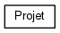
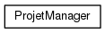

LO21 | Pistache
Projet de LO21 de Loïc Deryckère et Mewen Michel
Main Page
Namespaces
Classes
Files
Class List
Class Index
Class Hierarchy
Class Members
Class Hierarchy
Go to the textual class hierarchy


Generated on Sun Jun 14 2015 20:59:16 for LO21 | Pistache by
1.8.9.1

 1.8.9.1
1.8.9.1